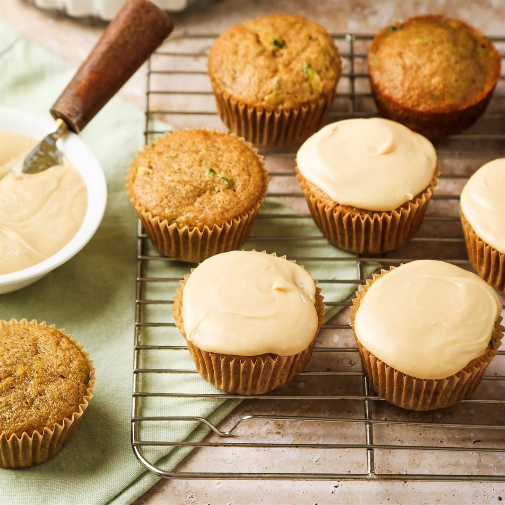

SPATULAS
The history of the cupcake dates back to the 18th century with Amelia Simmons' 1796 recipe, "a light cake to bake in small cups," in her book American Cookery.

so sad so depressed
The history of the cupcake dates back to the 18th century with Amelia Simmons' 1796 recipe, "a light cake to bake in small cups," in her book American Cookery.
A cupcake is a small, individual cake baked in a paper or aluminum cup and topped with frosting and decorations. They are popular for parties and special occasions, and a variety of recipes and decorating techniques can be used to create them.
